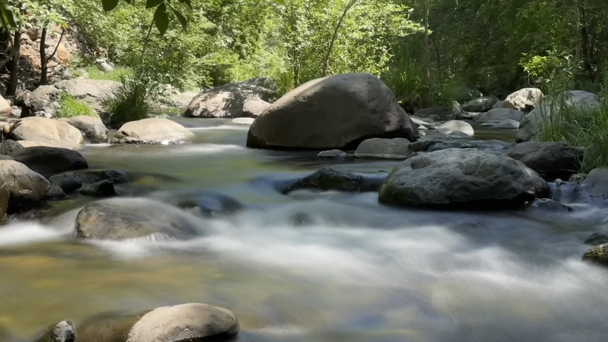

Sedona Jeep tours
Experience Sedona
More than a Jeep tour — land, story, and connection.

The approach
Not just overlook to overlook
For Keith, a great tour isn’t simply about driving from one beautiful overlook to the next. It’s about helping people experience Sedona itself — the land, the history, the stories, the energy, the plants and wildlife, and the remarkable feeling of being surrounded by red rock country.
“Keith didn’t just give us a jeep tour, he gave us Sedona. His knowledge of the land, the history, and the energy of those red rocks was unlike anything we could have found in a guidebook.”
Keith provides scenic, off-road, and vortex tours throughout Sedona, bringing together a lifelong love of nature, travel, people, storytelling, photography, and exploration. Rather than delivering a memorized script, he enjoys discovering what interests the people in his Jeep and allowing each experience to take on a personality of its own.
A longtime photographer and videographer, Keith also loves helping guests capture their Sedona experience — couples, families, and solo travelers returning home with great photographs of themselves in the landscape, not just another collection of red-rock pictures.
Music has also been part of Keith’s life since his early twenties, and occasionally that side of him finds its way into the red rocks as well. Depending on the tour and the moment, guests may even experience the sound of his Native-style flute surrounded by the natural beauty of Sedona.
When you climb out of Keith’s Jeep at the end of your adventure, he hopes you leave with more than great photographs and interesting Sedona stories. He hopes you feel like you actually experienced this extraordinary place.
Looking to explore Sedona on foot? Keith can also create custom guided hiking experiences tailored to your interests, desired pace, and the kind of Sedona experience you’re looking for.
From guests
Google reviews
Jeep Tours with Keith — words from the trail.
“The 6:00 pm blue Mystic Vortex tour was magical. Our guide Keith Hill was filled with love and light and had a strong connection to Mother Earth.”
“Keith didn’t just give us a jeep tour, he gave us Sedona… If you’re going to Sedona, don’t just book a tour..book Keith. He is the experience!!”
“Our tour with our guide extraordinaire, Keith was wonderful… He was very respectful and helpful to these two older ladies.”
“We had an amazing tour with Keith… He even played us a song on his wooden flute. It was a wonderful late afternoon tour.”
“Keith was an outstanding tour guide! … If you’re visiting Sedona, we highly recommend requesting Keith as your guide.”
“Keith was a wonderful guide, he knew my medical limitations and made sure to tailor our trip to accommodate me.”
“Keith was amazing he was so patient and so good he was so much fun!!! Such a beautiful soul….ppl book with him.”
“Keith was knowledgeable… Keith took great photos for us… Please take the tour (ask for Keith) if you have the chance.”
“We had an absolute blast on our Sunset Jeep Tour… And especially request Keith if at all possible!”
“Keith was an excellent driver, tour guide, and just overall great… I 100 percent booking with Jeep tours and request Keith.”
Gallery
{kind=link}
{kind=link}
{kind=link}